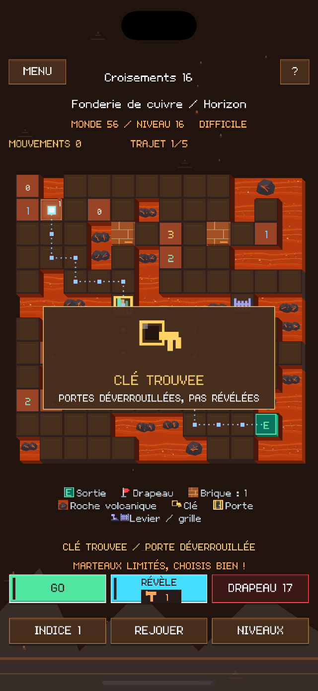
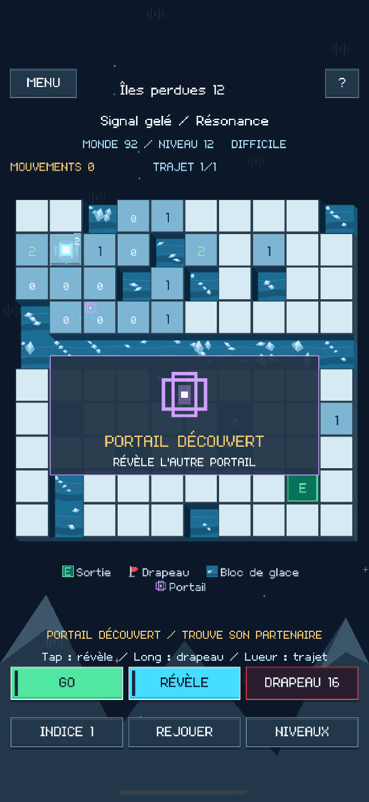

5 aventures point-and-click
TinyStory
Des héros animaux, des îles colorées et des mystères à résoudre. Choisissez votre histoire parmi les cinq aventures TinyStory.
iOS · Android · Ordinateur, selon le jeu
Découvrir TinyStoryAnneMu’s Games · AML Creation
Découvrez TinyStory et Celestwald, deux collections d’aventures point-and-click pleines de couleurs, de personnages attachants et d’énigmes.
Voir tous les jeux ↓5 aventures point-and-click
Des héros animaux, des îles colorées et des mystères à résoudre. Choisissez votre histoire parmi les cinq aventures TinyStory.
iOS · Android · Ordinateur, selon le jeu
Découvrir TinyStory
2 aventures dans un monde enchanté
Devenez apprenti alchimiste, découvrez l’arbre des rêves et poursuivez votre voyage avec ses graines magiques. Explorez Celestwald 1 et 2.
iOS · Android · Steam et itch.io pour le jeu 1
Découvrir Celestwald 1 & 2✦ Nouveau sur Android
Un démineur où chaque case sûre devient un chemin.
Lisez les indices, marquez les mines et guidez une petite lumière à travers des mondes colorés. Commencez avec 60 niveaux gratuits sur Android.
iPhone et iPad, bientôt



D’autres univers à découvrir
Personnalisez votre Mochi ou explorez les puzzles de Mahjong Castle.

Jeux kawaii et créatifs
Créez un compagnon virtuel Mochi, habillez vos petites peluches et décorez leurs chambres. Collectionnez les autocollants et jouez aux mini-jeux. L’activité quotidienne Golden Cloud permet de gagner des Bunny Tokens gratuits pour votre univers tout doux.
iOS · Android
Découvrir Mochi Plush Kawaii
Puzzles et logique
Associez les tuiles libres et explorez un château magique dans 240 niveaux répartis sur 14 lieux. La découverte gratuite comprend les 30 niveaux du jardin et quatre niveaux de glace. Terminez le niveau 30 du jardin pour débloquer le mode Classic illimité. Disponible sur Android, avec un pack Adventure optionnel en achat unique.
Android
Découvrir Mahjong CastleLa collection

Aventures point-and-click
Six chatons, six petites aventures. Explorez le monde de chaque chat, collectez des objets et résolvez des énigmes point-and-click pleines de fantaisie. Découvrez des histoires différentes et des scènes colorées dans Cats in the Box Adventure pour iOS et Android.
iOS · Android
Découvrir Cats in the Box Adventure
Aventures point-and-click
Aidez un petit héros rose à retrouver les morceaux d’un cristal brisé. Explorez 30 niveaux dans les mondes Green, Fire et Candy, collectez des objets et résolvez les énigmes. Attention aux pièges sur votre chemin. Fantasiant mêle aventure et puzzles sur mobile et itch.io.
iOS · Android · Windows · macOS · Linux
Découvrir Fantasiant · Tiny Hero
Jeux kawaii et créatifs
Habillez Lili et son nounours, puis décorez leur chambre avec des meubles, des couleurs et des jouets. Laissez parler votre créativité et retrouvez votre pièce sauvegardée. Lili’s Bedroom est un jeu de décoration hors ligne pour iOS, sans publicité.
iOS
Découvrir Lili’s Bedroom
Nouveau sur Android
Un démineur où chaque case sûre devient un chemin. Lisez les indices, marquez les mines et guidez une petite lumière à travers des mondes colorés. Commencez avec 60 niveaux gratuits sur Android.
Android · Google Play
Découvrir Lumen Mine Jouer sur Google Play Voir le Short
Puzzles et logique
Reconstituez des images colorées avec 22 puzzles classiques et 132 puzzles carrés. Choisissez la difficulté qui vous convient et retrouvez votre progression sauvegardée. Puzzles Mix propose deux façons de jouer avec les images sur iOS.
iOS
Découvrir Puzzles Mix
Puzzles et logique
Lisez les indices chiffrés, marquez les mines cachées et choisissez chaque déplacement avec soin. Explorez 120 niveaux dans deux mondes, avec des mines spéciales et un nombre de mouvements limité pour renouveler les défis. Little Minesweeper Guy propose des puzzles de démineur colorés sur iOS.
iOS
Découvrir Little Minesweeper Guy
Rythme et détente
Touchez l’écran lorsque le cercle atteint l’arc lumineux, enchaînez les combos et découvrez les décors illustrés. Choisissez le mode Zen, plus doux, ou le mode Fast, plus rapide. Explorez 10 mondes, dont cinq gratuits, avec un achat Premium unique optionnel. Un jeu de rythme pour iPhone et iPad.
iOS
Découvrir Zen Circle SpiritMochi Plush Kawaii · 2026
Créez votre Mochi, habillez vos peluches, décorez leurs chambres et collectionnez les autocollants. Jouez chaque jour avec le Golden Cloud pour gagner des Bunny Tokens gratuits.
Découvrir Mochi
AML Creation · Sons et moments calmes
Combinez pluie, vagues, feu de cheminée et bruits d’ambiance pour créer votre paysage sonore. Réglez chaque son, choisissez une minuterie et écoutez hors ligne sans publicité. Somnifox est une application sonore pour iPhone et iPad, avec des fonctions gratuites et un accès Premium optionnel.
Découvrir Somnifox ↗